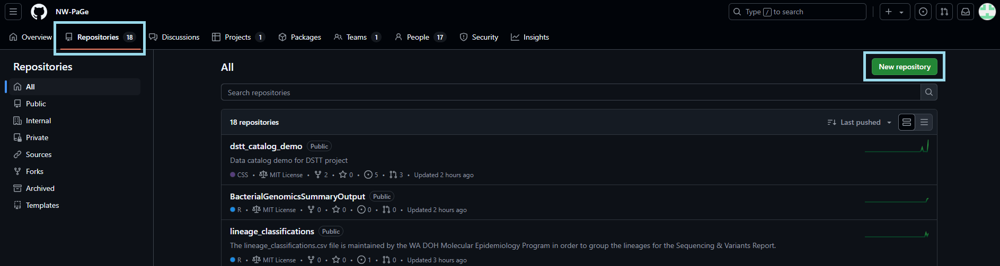
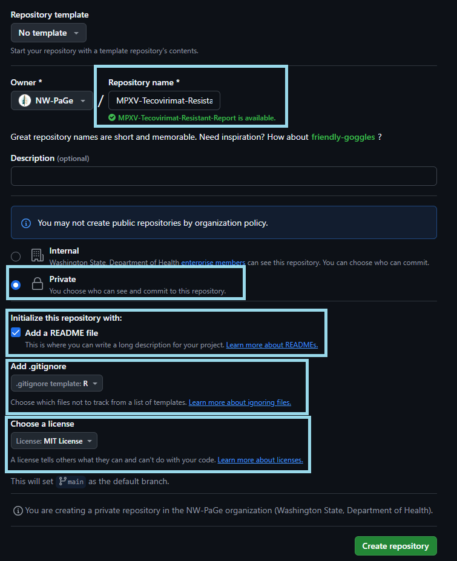
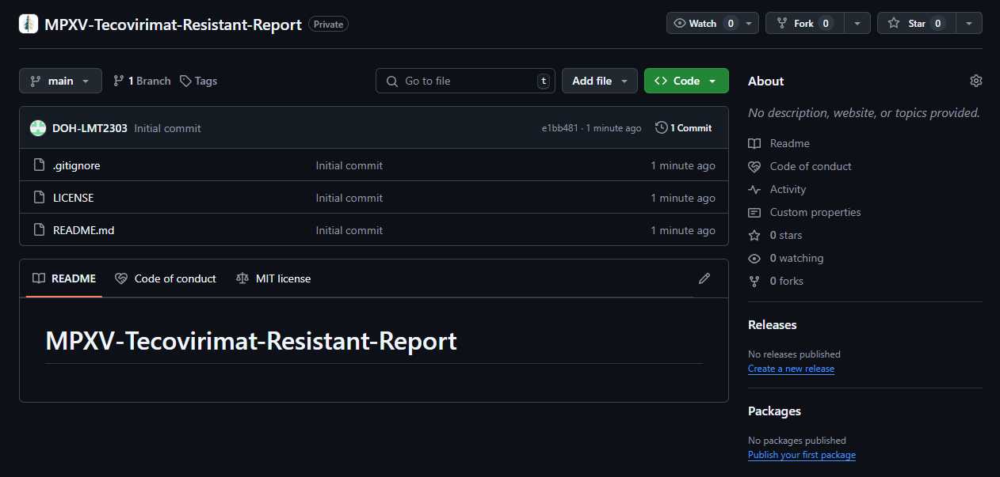
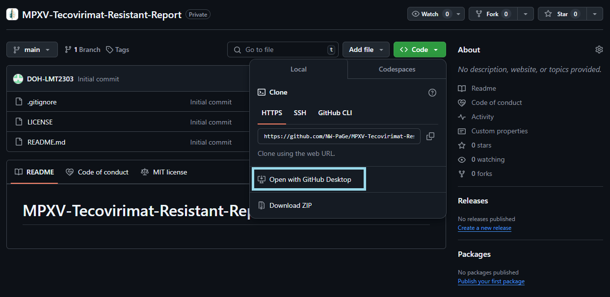
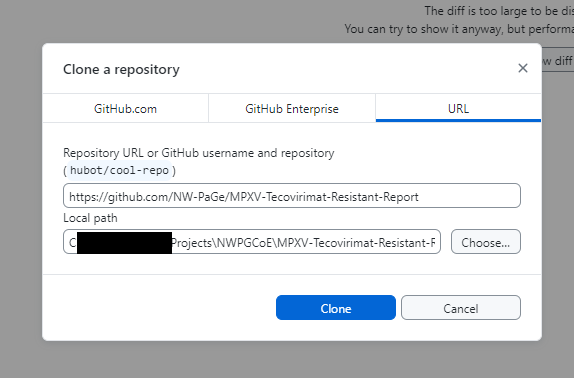
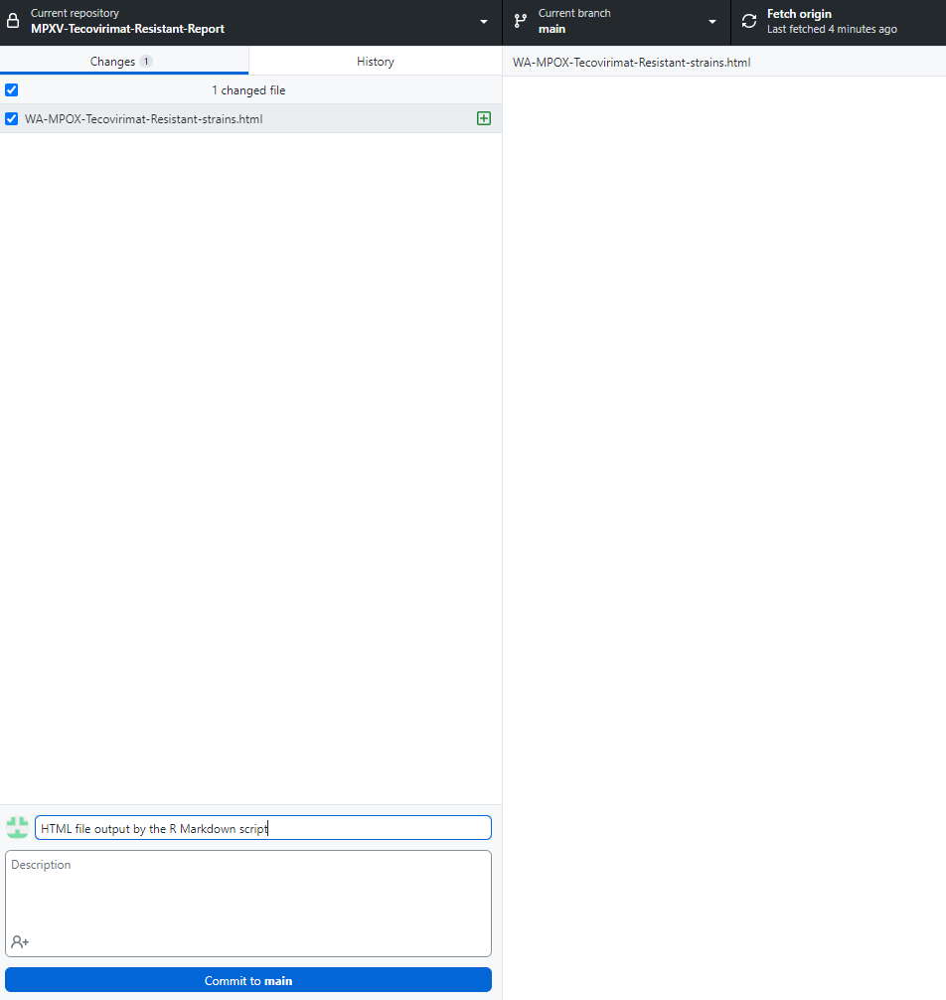

New Repo
Introduction
We are often writing scripts that could be useful to others. This tutorial goes over how to make your R scripts accessible to others by making them available in the NW-PAGE GitHub repo.
Steps
Sign-in
Sign-in to GitHub using your GitHub credentials. If you are part of WA DOH make sure to use your WA DOH compliant Git Hub account.
Create a new repository
In the browser, navigate to Repositories and click New repository

Fill out the new repository fields
- Name your repo
- Select your repo to be private, you can change this later
- Select the option to add a README file
- Select a .gitignore template (R or Python are good options)
- Select the MIT license
- Click
Create repository

Check out your new repo
Congratulations you have created a new GitHub repo. Now you have to populate it with information!

Clone the new repo
Now you would want to clone your repo in your machine to start uploading content via commits. To do this click Code and either clone your repo using terminal by copying the URL, or click Open with GitHub Desktop. I will demonstrate using the latter option.

GitHub Desktop will open. Double check the location where you want to close your repo. Click Clone and double check that a folder with the repo name has been created in the local path you provided.

Safeguard sensitive data
Before making your first commit you would want to make sure to do your due diligence to safe guard important information.
- Check that you are using git secrets which will block commits that contain file paths and server names from being uploaded to your repo
- Add file names that you don’t want to accidentally upload to the repo to the gitignore file
Populating the repo via commits
If your information is saved elsewhere and you need to upload it to the repo simply copy and paste the files inside the folder where you cloned the repo. In this example, I pasted an HTML file inside the folder and then I navigated to GitHub Desktop to make the commit which will upload that file to the repo.
Remember to select the file, add a title to the commit, click Commit to main, and then click Push origin.
